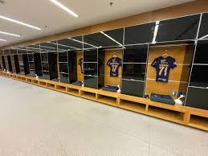

Arena Corinthans SCCP24
Descubrar como é a Arena Corinthans por dentro, você só vê ela pela tv ou nas nossas arquibancadas, então coheça pessoalmente nossas taças, nossa história, descubra coisas que só os corintianos verdadeiros possam ver, então não percam.
Garanta sua vagaO que você ira conhecer
-

Museu do povo
O museu apresenta uma vasta coleção de troféus, camisas históricas, fotos e exibições interativas que retratam os momentos mais marcantes do clube desde sua fundação em 1910. Os visitantes podem conhecer a trajetória dos grandes ídolos corinthianos, reviver conquistas memoráveis como a Copa do Mundo de Clubes da FIFA em 2000 e 2012.
-

Sala de coletiva
O ambiente conta com mesas e cadeiras confortáveis, ótima acústica e painéis de LCD para exibir informações relevantes. Durante as coletivas, jogadores, técnicos e dirigentes se sentam à frente dos repórteres para responder perguntas e compartilhar suas impressões sobre as partidas.
-

Túnel de acesso ao campo
Esse espaço é carregado de simbolismo, pois representa o momento de concentração e preparação final antes das partidas. Decorado com imagens e mensagens que remetem à história e à paixão da torcida, o túnel busca inspirar os atletas e reforçar a conexão com a identidade corinthiana.
-

Vestiário
Equipado com infraestrutura moderna, o local oferece conforto e funcionalidade, incluindo armários personalizados, áreas para fisioterapia e espaços de convivência. Mais do que um ambiente de preparação física, o vestiário é onde a equipe se reúne para alinhar estratégias, fortalecer o espírito de grupo e absorver a energia motivadora de mensagens que exaltam a história e os valores do clube.
-

Banco de reservas
Equipado com assentos confortáveis e visão privilegiada do campo, o banco é um ponto estratégico para decisões táticas e suporte imediato aos atletas em jogo. Além de ser uma extensão do vestiário, é um local onde a tensão e a expectativa se misturam, representando a dedicação de todos em busca da vitória alvinegra.
Instrutores
"Apresentamos nossos instrutores de tour na Arena Corinthians: profissionais altamente capacitados e apaixonados pelo Timão, prontos para levar você a uma experiência única. Eles conhecem cada detalhe e história desse templo do futebol e estão preparados para guiá-lo com entusiasmo e dedicação, garantindo que sua visita seja memorável e repleta de curiosidades incríveis sobre o clube e a arena."
-

Roberto
Responsavel pela apresentação
-

Claudia
Responsavel pela fala dos lugares
-

Renato
Responsavel pela saída das pessoas
O que nossos visitantes falam
-
Renata
Achei muito bom conhecer a arena Corinthans vi coisas que só via pela TV experiência incríveis que passei.
-
Marcos
O tour foi incrível! A história do clube, o ambiente do estádio e a sensação de estar no palco de tantas conquistas me emocionaram
-
Kaike
O tour foi muito legal, especialmente por poder ver o estádio por dentro e ouvir as histórias que marcaram a trajetória do clube.
-
Matheus
A sensação de estar no estádio onde tantas lendas do futebol jogaram e conquistar aquele gramado foi surreal.
-
Moniky
Eu não sou corintiana, mas a estrutura e a história do estádio são impressionantes. A guia fez um trabalho excelente, explicando desde a fundação do clube até o legado da arena. Meu filho ficou encantado ao poder pisar no gramado.
Não fique em casa venha conhecer
- Só o Corinthans pode te dar essa felicidade
- Não perca essa oportunidade
- O maior time do Brasil
- Venha conhecer o poderoso timão!